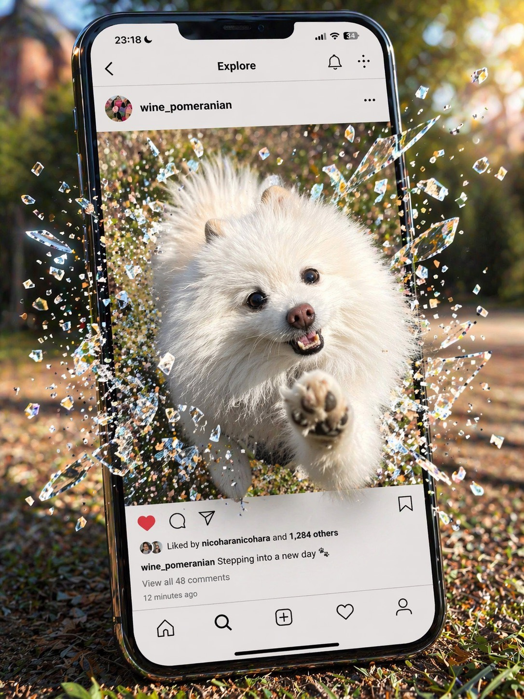

あの頃日和
作品
about
game
contact
Rick's manga
あの頃日和
忘れてしまった思い出や、
出来事を描いています。
new
すべて見る →
1
ピアノ日和
あの日、窓から聴こえてきたピアノの音のこと
2025.05.20
2
犬
いつも一緒にいた、あの子のこと
2025.05.10
3
移り変わり
季節のように、あの頃はゆっくり変わっていった
2025.04.28
series
すべて見る →
全12話
ピアノ日和
思い出 · 2025年〜
連載中
犬
思い出 · 2025年〜
読切
移り変わり
日常 · 2025年
全6話
神社の朝
情景 · 2024年〜
読切
あの夏の球場
思い出 · 2024年
全8話
東京の夕暮れ
日常 · 2024年〜

Rick
東京在住、会社員。
懐かしい思い出や想いの瞬間を漫画にしています。
ワインと犬と神社巡りと野球が好きです。
Note
Instagram